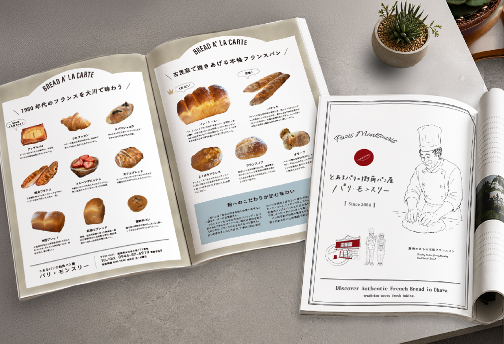
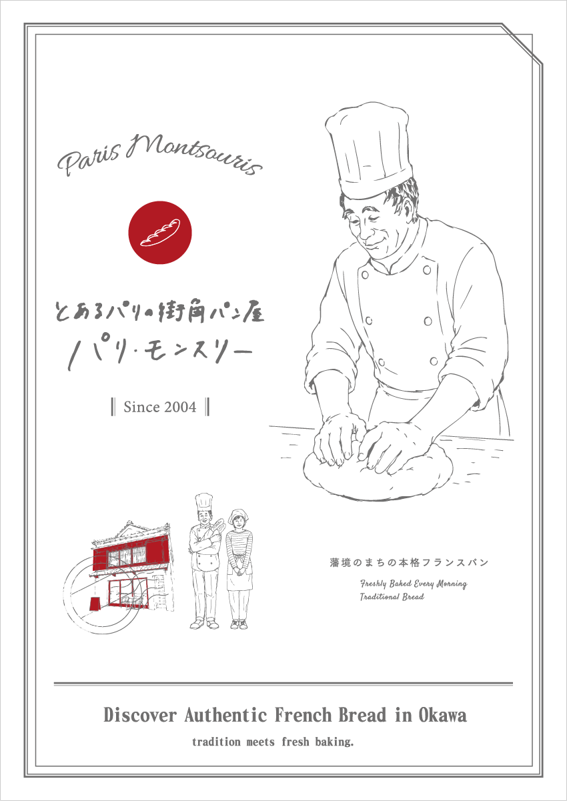
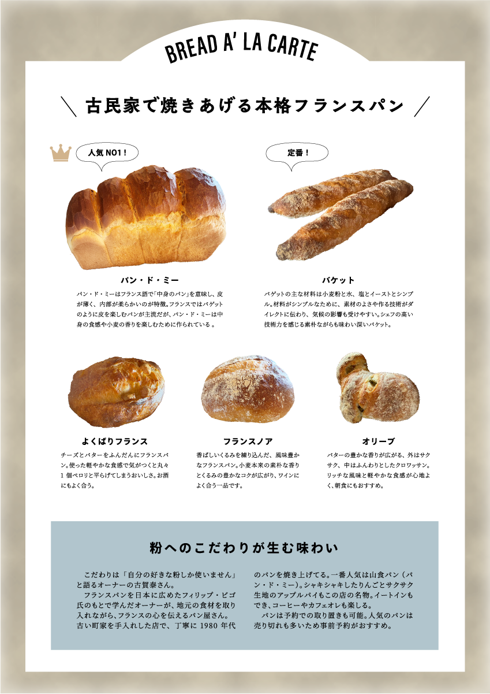
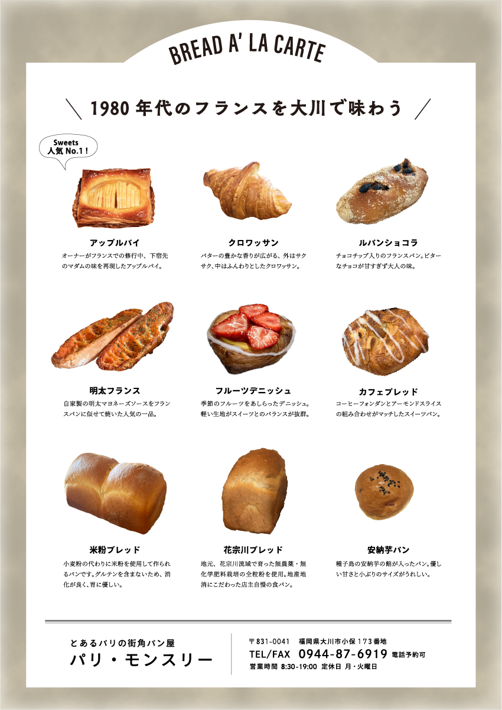
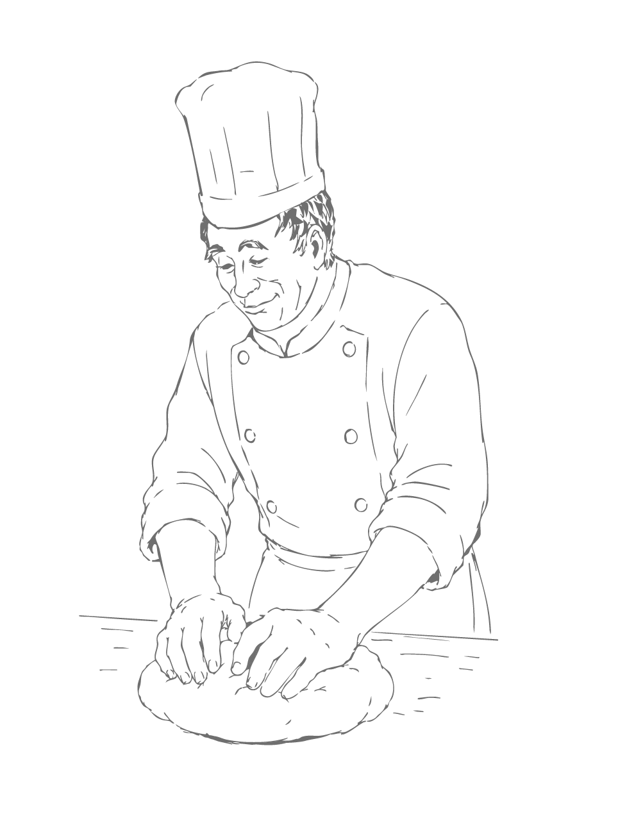
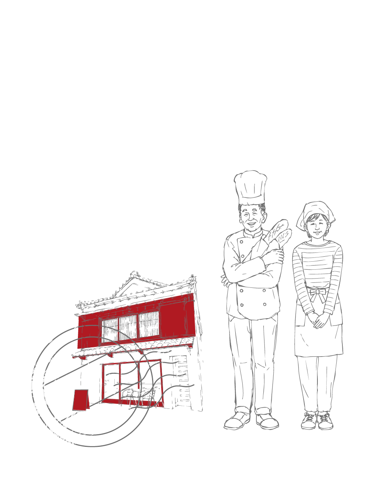

← BACK TO WORKS
フランスパン専門店
GRAPHIC
リーフレット

実在のフランスパン専門店の特集記事を想定して制作した習作。
弁柄塗りの赤が特徴的な店舗のイメージから赤を差し色に白を基調としたシンプルで清潔感のあるデザインを心がけました。
店主夫婦と店舗イラストは、手描きをラスタデータ化して作成しました。





- Project
- パリ・モンスリー
- Category
- リーフレットデザイン
- 制作
- 2026年7月